כלי עזר לא רשמי, שאינו קשור למכללת אפקה. הנתונים נלקחים מהידיעון הציבורי ועלולים להיות שגויים או ישנים. ההרשמה באפקה-נט היא הקובעת.
כל צילומי המסך במסמך צולמו מהמערכת עצמה, עם הנתונים האמיתיים של תשפ״ז. הדוגמה היא סטודנט בשנה ב׳ בהנדסה מכנית שנכשל בקורס אחד.
תוכן העניינים
מה במסמך
1הבעיה והפתרון
2תוכניות ומחזורים נתמכים
3התחלה מהירה ב-6 צעדים
4המצב שלי: ציונים, התקדמות ותקנון
5בניית המערכת
6כישלון בקורס ודרישות קדם
7העדפות ואילוצים
8שנה מלאה, קיץ והתמחות
9תיאום עם חברים
10סיום: רשימה להרשמה ולוח שנה
11מפת ההתקדמות בתואר
12שימוש בטלפון
13מקור הנתונים ועדכונם
14פרטיות ואבטחה
15סעיפי התקנון שהכלי מיישם
16ההצעה למכללה ופרטי קשר
בשורה אחת
הסטודנט מסמן מה עבר ובמה נכשל, והכלי בונה לבד עד 10 מערכות שעות חוקיות לסמסטר או לשנה, לפי דרישות הקדם, התקנון, האילוצים האישיים והחברים,
ומפיק רשימה מוכנה להרשמה באפקה-נט.
פרק 1
1הבעיה והפתרון
בניית מערכת שעות באפקה-נט היא עבודה ידנית: מצליבים קבוצות, דרישות קדם, נקודות זכות ותקנון. כישלון בקורס משנה את כל השרשרת שאחריו.
הבעיה
הסטודנט צריך לבדוק לבד אילו קורסים פתוחים לו, אילו קבוצות לא מתנגשות, וכמה נ״ז חסרים לו בכל דרישה של התואר.
אחרי כישלון, הקורס חוזר, וכל קורס שהוא דרישת קדם שלו נחסם. קשה לראות את ההשפעה על השנה כולה.
הרבה סטודנטים פונים בגלל זה למזכירות ולרכזים, בעיקר בתקופת ההרשמה.
מה הכלי עושה
תחום
מה זה נותן לסטודנט
תוכניות
הנדסת חשמל, מכונות, תוכנה, תעשייה וניהול והנדסה רפואית, וגם מדעי המחשב ומדעי הנתונים, ביום ובערב.
מצב אישי
מסמנים אילו קורסים עברת ובאילו נכשלת. הכלי חוסם קורסים לפי דרישות קדם, מראה כמה נ״ז נשארו לכל דרישה בתואר, ומזהיר ממצב של לימודים על תנאי.
חיפוש
הכלי מחפש לבד מערכות שמתאימות לאילוצים, כמו ימים פנויים, שעות, בלי חלונות ופיזור בחינות, ומציג עד 10 חלופות מדורגות.
תכנון
שנה שלמה, סמסטר א׳ וב׳ יחד, כולל סמסטר קיץ, ובחירת התמחות לפי כללי המחלקה.
חברים
תיאום מערכת עם חברים. החיפוש מעדיף מערכות עם שיעורים משותפים.
בסוף
רשימת הרשמה עם מספרי קבוצות וקישורים לידיעון, וקובץ ללוח השנה.
בלי התקנה ובלי הרשמה
נכנסים לכתובת מכל דפדפן, במחשב או בטלפון. אין חשבון ואין סיסמה, והכול נשמר בדפדפן של הסטודנט בלבד.
פרק 2
2תוכניות ומחזורים נתמכים
סמסטרים א׳, ב׳ וקיץ של תשפ״ז, לכל תוכנית בארבעה מחזורים (תחילת לימודים 2024 עד 2027).
תוכנית
מסלולים
נבדק מול
הנדסה מכנית
יום, ערב
תוכנית הלימודים הרשמית תשפ״ז
הנדסת חשמל
יום, ערב
תוכנית הלימודים הרשמית תשפ״ז
הנדסת תוכנה
יום, ערב
תוכנית הלימודים הרשמית תשפ״ז
מדעי המחשב
יום, ערב
תוכנית הלימודים הרשמית תשפ״ז
מדעי הנתונים
יום
תוכנית הלימודים הרשמית תשפ״ו (האחרונה שפורסמה)
הנדסת תעשייה וניהול
יום, ערב
תוכנית הלימודים הרשמית תשפ״ז
הנדסה רפואית
יום
תוכנית הלימודים הרשמית תשפ״ז
מה נמשך מהידיעון: הקורסים, הקבוצות, המפגשים, המרצים, דרישות הקדם ונ״ז המינימום של כל רשימה.
מה נבדק ידנית: סך הנ״ז לתואר, תחומי ההתמחות וכלל הבחירה, מול תוכניות הלימודים הרשמיות של תשפ״ז. כשתוכנית הלימודים והידיעון סותרים, הכלי הולך לפי הידיעון, והסתירות מתועדות בקוד הפתוח.
מסלולי ערב: משתמשים באותם קורסים וקבוצות כמו מסלולי היום, וברירת המחדל שלהם היא שיעורים מ-16:00 ואילך (העדפה שאפשר לשנות).
בחינות: לוח הבחינות של תשפ״ז עוד לא פורסם, והכלי מציג "טרם פורסם". הוא יתמלא אוטומטית כשיפורסם בידיעון.
לא נכללות: תוכניות תואר שני, כי הכלי מחשב לפי תקנון של תואר ראשון.
פרק 3
3התחלה מהירה ב-6 צעדים
כך נראה שימוש טיפוסי מהכניסה הראשונה ועד רשימה מוכנה להרשמה. בדרך כלל זה לוקח כמה דקות.
בוחרים מסלול ושנת לימודים. בעמוד "המצב שלי" בוחרים תוכנית (למשל הנדסה מכנית) ושנה (למשל ב׳). אפשר להוסיף ציון אמירנט, וקורסי האנגלית יסומנו "פטור" לפיו.
מסמנים מה עברתם ובמה נכשלתם. השנים הקודמות מסומנות מראש כ"עברתי", ומתקנים רק את מה ששונה. אפשר גם לייבא את גליון הציונים מהפורטל כקובץ PDF.
לוחצים "סיימתי, לבניית המערכת". הכלי עובר למסך הבנייה ומציג מיד את החלופה הטובה ביותר.
בוחרים לכל קורס חובה, אולי או לא. "חובה" נכנס לכל מערכת, "אולי" נכנס רק אם הוא משתלב טוב, ו"לא" לא בתכנון. המערכות מתעדכנות בכל שינוי.
מדפדפים בין החלופות בחצים ‹ › (או בחצי המקלדת). לחיצה על שיעור פותחת פרטים, ואפשר לנעוץ קבוצה.
פותחים "רשימה להרשמה" ומעתיקים את מספרי הקבוצות לאפקה-נט. אפשר גם להוסיף את המערכת ללוח השנה בטלפון.
שמירה אוטומטית
כל שינוי נשמר מיד בדפדפן. סוגרים את האתר וחוזרים אליו מאוחר יותר, והכול נשאר במקום.
פרק 4
4המצב שלי: ציונים, התקדמות ותקנון
העמוד הראשון שהסטודנט רואה. הוא קובע למי המערכת נבנית: איזו תוכנית, איזה מחזור, ומה כבר נעשה.
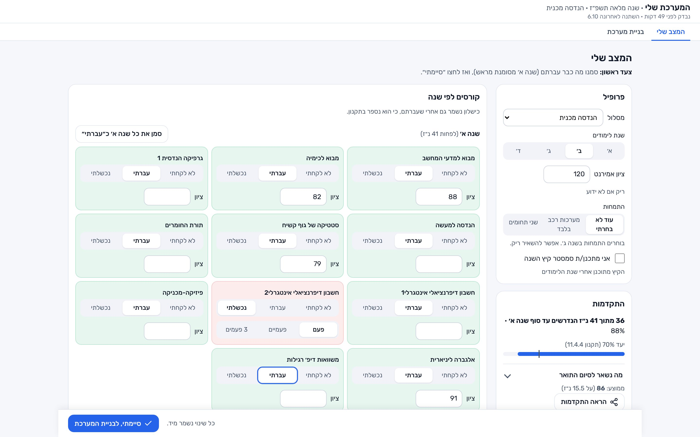
איור 1. עמוד "המצב שלי". מימין הפרופיל וההתקדמות, משמאל הקורסים לפי שנה. "חשבון דיפרנציאלי אינטגרלי 2" מסומן "נכשלתי" (באדום), ושאר קורסי שנה א׳ "עברתי" (בירוק), חלקם עם ציון.
הפרופיל
מסלול ושנת לימודים: קובעים את התוכנית, את המחזור ואת רשימות הקורסים שלו. מחזור בלי נתונים עדיין מתוכנן לפי המחזור הקרוב, והעמוד אומר זאת.
ציון אמירנט: אופציונלי. קובע אילו קורסי אנגלית נדרשים ואילו מסומנים "פטור".
התמחות: בוחרים בשנה ג׳, לפי כלל המחלקה (ראו פרק 8).
סמסטר קיץ: סימון "אני מתכנן/ת סמסטר קיץ השנה" מוסיף את הקיץ לתכנון.
סטטוס לכל קורס
לכל קורס שלוש אפשרויות: לא לקחתיעברתינכשלתי.
לקורס שעברתם אפשר להוסיף ציון, והכלי מחשב ממוצע משוקלל. לקורס שנכשלתם בו בוחרים כמה פעמים (פעם, פעמיים, 3 פעמים).
הכישלון נשמר גם אחרי שעוברים את הקורס, כי התקנון סופר אותו.
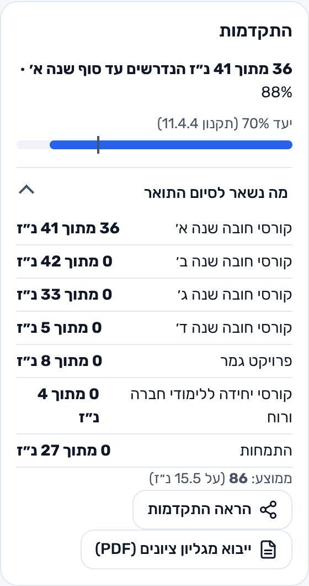
איור 2. ההתקדמות מול יעד 70% (תקנון 11.4.4), ו"מה נשאר לסיום התואר" לכל דרישה.
התקדמות ורשימת סיום התואר
מד התקדמות: כמה נ״ז נצברו מתוך הנדרשים עד סוף השנה הנוכחית, עם קו יעד של 70% לפי סעיף 11.4.4 בתקנון.
מה נשאר לסיום התואר: לכל דרישה (חובה לכל שנה, פרויקט גמר, לימודי חברה ורוח, התמחות) כמה נ״ז נצברו מתוך כמה. דרישה שהושלמה מסומנת ב-✓.
ממוצע: ממוצע משוקלל לפי נ״ז, מהציונים שהוזנו.
ייבוא מגליון ציונים (PDF): מעלים את הגליון מהפורטל, הכלי מזהה את הקורסים והציונים ומציג מה ישתנה לפני שמחילים. הקובץ נקרא רק במחשב של הסטודנט ולא נשמר.
אזהרות תקנון: הכלי מזהיר ממעמד "על תנאי" אחרי 3 כישלונות מצטברים (11.4.1), ומהרחקה אחרי 4 כישלונות מצטברים (11.5.1) או 3 כישלונות באותו קורס (11.5.2).
מחיקת הנתונים: כפתור אחד מוחק את כל מה שנשמר בדפדפן.
פרק 5
5בניית המערכת
המסך המרכזי. הכלי מחפש ברקע את כל השילובים החוקיים של קבוצות, מדרג אותם ומציג את 10 הטובים ביותר על לוח שבועי.
איור 3. מסך "בניית מערכת" לשנה מלאה, סמסטר א׳. למעלה: החלופה המוצגת (1 מתוך 10) ופס הסיכום. במרכז: הלוח השבועי. מימין: "הקורסים שלי", עם חובה, אולי או לא לכל קורס.
חלקי המסך
מעבר בין חלופות: "חלופה 1 מתוך 10" עם חצים. החלופות מדורגות לפי ההעדפות (פרק 7).
לתכנן: שנה, רק א׳, רק ב׳ או קיץ. בתכנון שנה מחליפים בין סמסטר א׳ לב׳ בלשוניות.
הודעת הנחה: בתכנון שנה, הכלי אומר על מה מבוסס סמסטר ב׳, למשל "התכנון של ב׳ מניח שעוברים את חוזק חומרים 1…".
הלוח השבועי: כל שיעור עם שם הקורס, שעות, סוג (הרצאה, תרגול, מעבדה) וחדר. לכל קורס צבע משלו.
הקורסים שלי: לכל קורס נ״ז, חובה/אולי/לא, ובאיזה סמסטר ללמוד אותו (אוטומטי, א׳ או ב׳). תגיות מסבירות את המצב: חזרהרק בסמסטר ב׳פותח 10 קורסים✓ במערכת · סמסטר ב׳זמין בתנאי.
איור 4. פס הסיכום: מספר קורסים ונ״ז בסמסטר ובשנה, ימים פנויים, שעות חלונות, האם החלופה מקדמת בתואר, ומצב לוח הבחינות. מתחתיו: אילו קורסי קדם יש בחלופה וכמה קורסים חדשים היא פותחת.
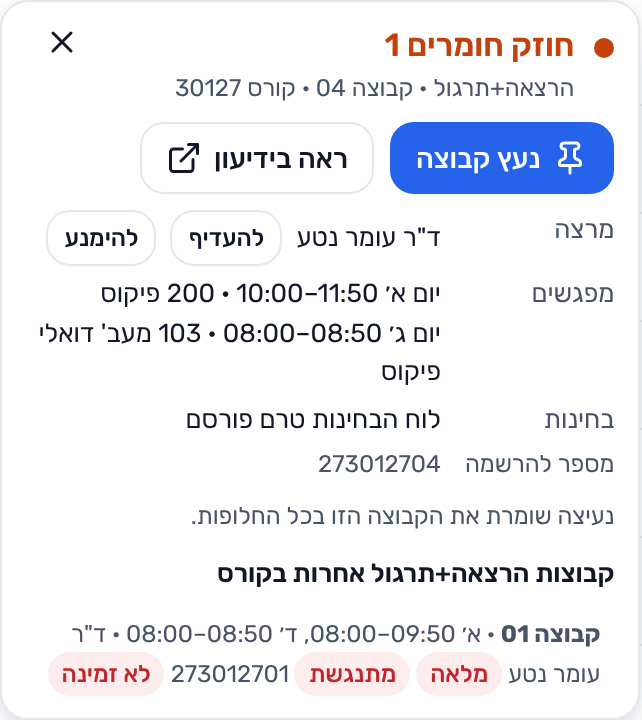
איור 5. לחיצה על שיעור: פרטי הקבוצה, מספר להרשמה, נעיצה, קישור לידיעון, והקבוצות האחרות בקורס.
פרטי שיעור ונעיצה
לחיצה על שיעור בלוח פותחת את פרטי הקבוצה: מרצה, מפגשים, בחינות ומספר הקבוצה להרשמה.
נעץ קבוצה: שומר את הקבוצה הזו בכל החלופות, למשל כשכבר נרשמתם אליה או שהיא מתאימה במיוחד.
ראה בידיעון: קישור ישיר לדף הקורס בידיעון הרשמי.
מרצה: אפשר לבחור "להעדיף" או "להימנע" ממרצה, והחיפוש מתחשב בזה.
קבוצות אחרות: רשימת כל הקבוצות בקורס, עם סימון מלאה ומתנגשת, כדי לראות מה האפשרויות אם הקבוצה הנבחרת תתמלא.
השוואה בין חלופות
מחלופה 2 והלאה מופיעה שורה "לעומת חלופה 1" שמסכמת את ההבדלים: ימים פנויים, חברים, חלונות וקורסים. למשל: "אותם קורסים, שיבוץ אחר".
פרק 6
6כישלון בקורס ודרישות קדם
כאן הכלי חוסך הכי הרבה עבודה. כישלון אחד משפיע על שרשרת של קורסים, והכלי מחשב אותה לבד ומסביר כל חסימה.
מה קורה אחרי כישלון
הקורס מוצע שוב כחזרה (תקנון 11.6.1), ומקבל עדיפות במערכת. בדוגמה, "חשבון דיפרנציאלי אינטגרלי 2" נכנס למערכת בסמסטר ב׳, כי הוא נפתח רק בו.
כל קורס שתלוי בו נחסם (תקנון 7.4). הכלי מראה את השרשרת המלאה, למשל: "תורת הבקרה ← מערכות ליניאריות ← אנליזה הרמונית ← חשבון דיפרנציאלי אינטגרלי 2 (נכשלת)".
קורס מקביל מותר באותו סמסטר (תקנון 6.2.3), ומסומן "זמין בתנאי", למשל "רק יחד עם פיזיקה חשמל ומגנטיות".
שנה מלאה: קורס בסמסטר א׳ יכול לפתוח את ההמשך שלו בסמסטר ב׳, והכלי מתכנן את שניהם יחד.
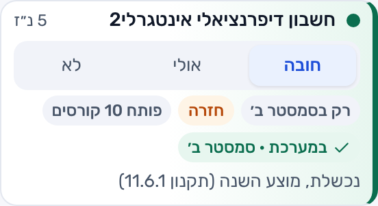
איור 6. קורס שנכשלו בו: מסומן "חזרה", "פותח 10 קורסים", ונכנס למערכת בסמסטר ב׳.
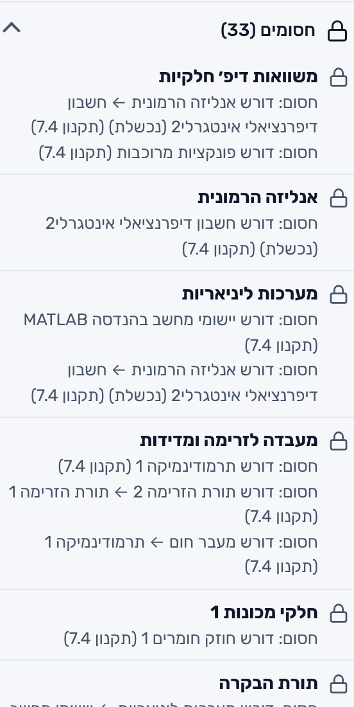
איור 7. "חסומים": כל קורס שעוד אי אפשר לקחת, עם דרישת הקדם החסרה וסעיף התקנון.
למה זה חשוב למכללה
השאלה "מה אני יכול לקחת אחרי שנכשלתי ב-X?" היא אחת הפניות הנפוצות למזכירות ולרכזים. הכלי עונה עליה לבד, עם הפניה לסעיף בתקנון.
פרק 7
7העדפות ואילוצים
כפתור "העדפות" בראש המסך. כל שינוי מריץ את החיפוש מחדש ברקע, והחלופות מתעדכנות תוך שניות.
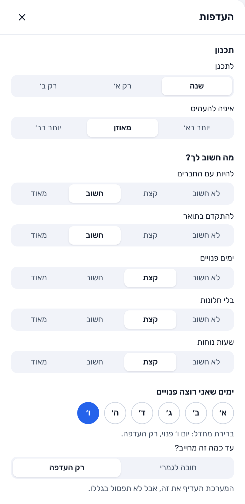
איור 8א. משקלי ההעדפות, ימים פנויים ומידת המחויבות.
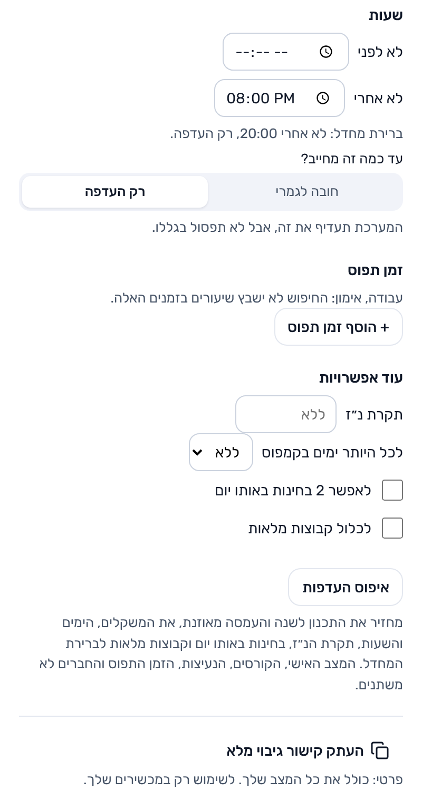
איור 8ב. שעות, זמן תפוס ואפשרויות נוספות.
מה חשוב לך?
חמש העדפות, כל אחת בסולם של 4 דרגות (לא חשוב, קצת, חשוב, מאוד): להיות עם החברים, להתקדם בתואר, ימים פנויים, בלי חלונות ושעות נוחות.
החלופות מדורגות לפי השקלול שלהן.
העדפה או חובה
יום פנוי וטווח שעות אפשר להגדיר כרק העדפה (המערכת תעדיף, אבל לא תפסול בגלל זה) או כחובה לגמרי (כל מערכת חייבת לעמוד בזה).
אילוצים נוספים
זמן תפוס: עבודה או אימון. החיפוש לא ישבץ שיעורים בזמנים האלה.
תקרת נ״ז לסמסטר, ולכל היותר N ימים בקמפוס.
איפה להעמיס: יותר בא׳, מאוזן או יותר בב׳.
לאפשר 2 בחינות באותו יום, ולכלול קבוצות מלאות.
איפוס העדפות וקישור גיבוי מלא.
כשאין פתרון
אם האילוצים סותרים, הכלי לא נשאר ריק: הוא מסביר למה אין מערכת ומציע מה לרכך. בדוגמה, כל ימי השבוע סומנו כ"חובה פנוי":
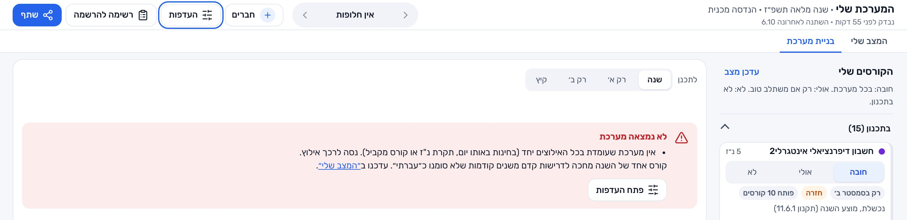
איור 9. "לא נמצאה מערכת": הסבר, קישור לעדכון ב"המצב שלי", וכפתור לפתיחת ההעדפות.
פרק 8
8שנה מלאה, קיץ והתמחות
אפשר לתכנן סמסטר אחד, או שנה שלמה שבה סמסטר א׳ וב׳ נבנים יחד, ועוד סמסטר קיץ.
תכנון שנה
"לתכנן: שנה" בונה זוג מערכות, א׳ וב׳, כשקורס מא׳ פותח את ההמשך שלו בב׳.
לכל קורס אפשר לקבוע סמסטר (אוטומטי, א׳ או ב׳), ובהעדפות לבחור איפה להעמיס.
פס הסיכום מציג גם את סך השנה, למשל "בכל השנה: 15 קורסים, 42 נ״ז".
הקיץ מתוכנן אחרי שנת הלימודים, בהנחה שעוברים את הקורסים שבמערכת השנה, והנ״ז שלו נספרים.
התמחות
בוחרים התמחות לפי הכלל של כל מחלקה: תחום אחד, שני תחומים, או תחום שעומד לבד (למשל "מערכות רכב בלבד" במכנית).
אחרי שמגיעים למספר התחומים, השאר ננעלים, כדי שלא תיבחר התמחות שלא קיימת.
קורסי החובה והבחירה של ההתמחות נכנסים לתכנון ולרשימת סיום התואר.
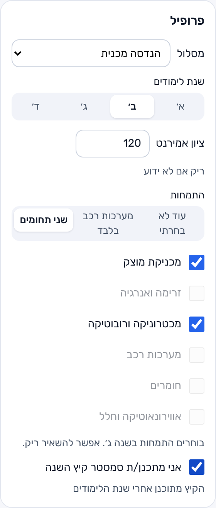
איור 10. בחירת שני תחומי התמחות בהנדסה מכנית, וסימון סמסטר קיץ.
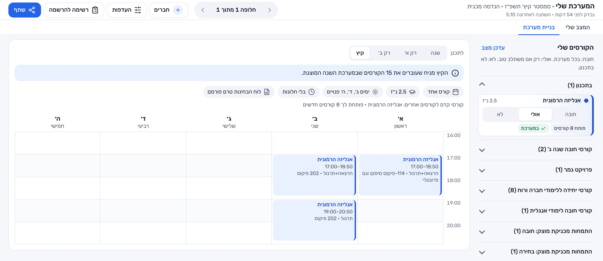
איור 11. לשונית "קיץ": מערכת לסמסטר הקיץ, עם ההנחה שעליה היא מבוססת ורשימת הקורסים שאפשר להוסיף.
פרק 9
9תיאום עם חברים
סטודנטים רוצים ללמוד עם החברים שלהם. הכלי מאפשר לשתף מערכת בקישור, והחיפוש מעדיף מערכות עם שיעורים משותפים.
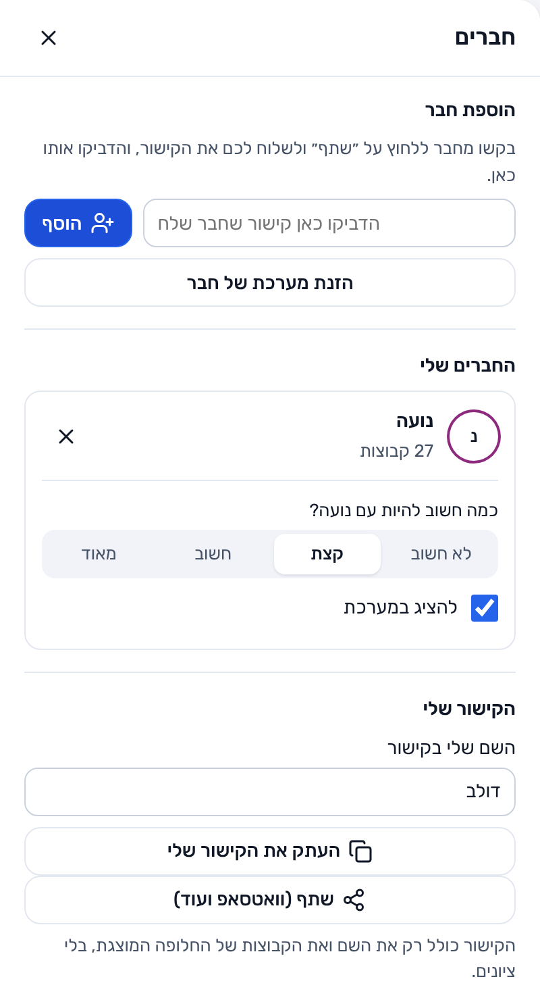
איור 12. חלון "חברים": הוספת חבר מקישור, החברים שלי, והקישור שלי.
איך זה עובד
החבר לוחץ "שתף" ושולח את הקישור שלו (למשל בוואטסאפ).
מדביקים את הקישור בחלון "חברים" ולוחצים "הוסף".
בוחרים כמה חשוב להיות עם החבר הזה (4 דרגות), והאם להציג אותו במערכת.
השיעורים המשותפים מסומנים בלוח בשם החבר, ופס הסיכום מראה כמה קורסים משותפים, למשל "8 קורסים עם נועה".
דרכים נוספות להוסיף חבר
עורך מסך מלא: מחפשים קורס ומשבצים את הקבוצות של החבר (איור 14).
הדבקת טקסט עם מספרי קבוצות, או העלאת קובץ PDF או תמונה של המערכת שלו. התמונה מפוענחת בדפדפן ולא נשלחת לשום מקום.
מה הקישור כולל
רק את השם ואת הקבוצות של החלופה המוצגת. בלי ציונים, בלי כישלונות ובלי שום מידע אישי אחר.
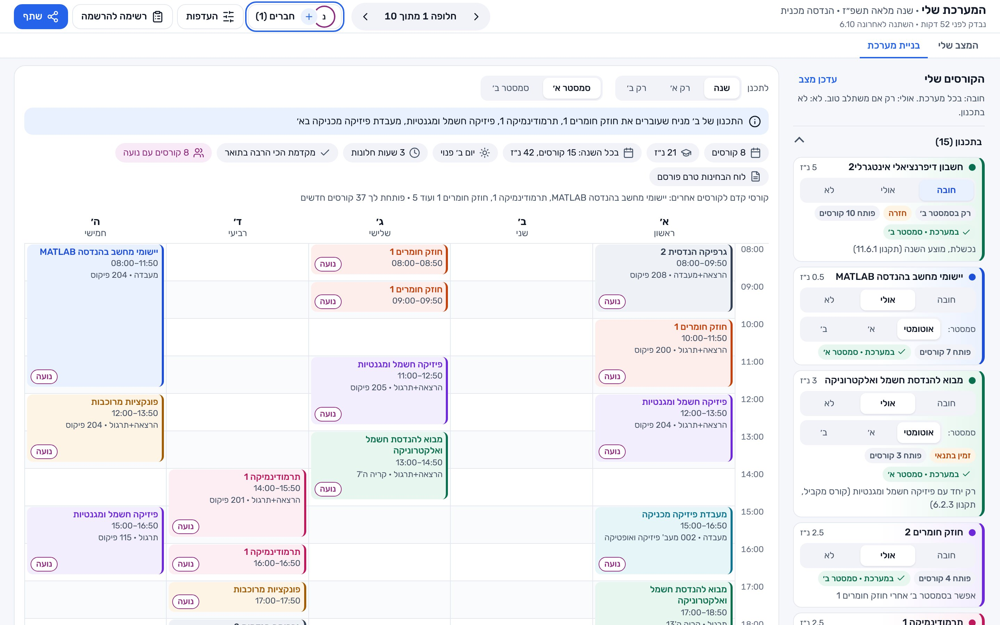
איור 13. אחרי הוספת החברה "נועה", החיפוש בחר קבוצות משותפות. כל שיעור משותף מסומן בשמה, ובפס הסיכום: "8 קורסים עם נועה".
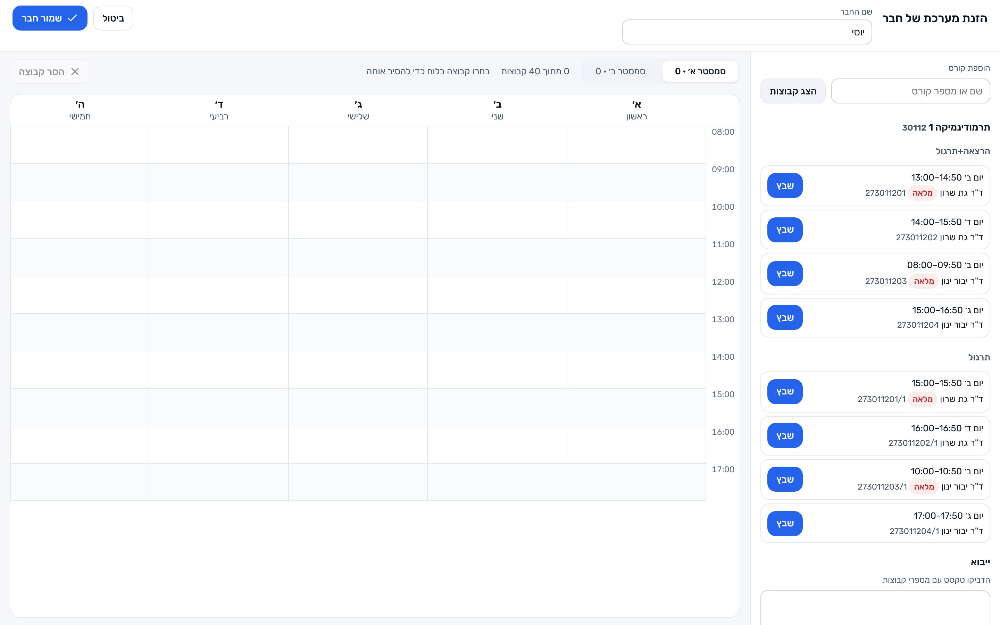
איור 14. עורך המערכת של חבר: חיפוש קורס, כל הקבוצות שלו (כולל "מלאה"), ושיבוץ בלחיצה.
פרק 10
10סיום: רשימה להרשמה ולוח שנה
התוצר הסופי: כל מה שצריך כדי להירשם באפקה-נט, מסודר לפי סמסטר.
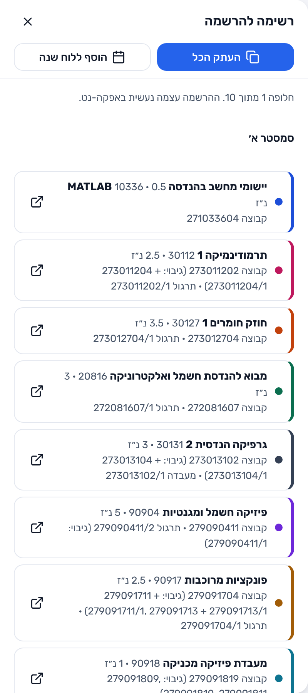
איור 15. "רשימה להרשמה": לכל קורס מספר הקבוצה והתרגול, קבוצות גיבוי וקישור לידיעון.
רשימה להרשמה
לכל קורס: שם, מספר קורס, נ״ז, ומספר הקבוצה להרשמה, כולל התרגול או המעבדה.
קבוצות גיבוי: קבוצות חלופיות שמשתלבות באותה מערכת, למקרה שהקבוצה הראשונה תתמלא בזמן ההרשמה.
קישור לכל קורס בידיעון הרשמי.
העתק הכל: מעתיק את הרשימה כטקסט.
הרשימה מזכירה שההרשמה עצמה נעשית באפקה-נט.
הוספה ללוח שנה
"הוסף ללוח שנה" מוריד קובץ .ics שנפתח ביומן של גוגל, אפל או אאוטלוק. השיעורים חוזרים כל שבוע בתאריכי הסמסטר, והחגים וימים בלי לימודים מלוח השנה האקדמי לא נכללים.
שיתוף וגיבוי
שתף: קישור למערכת לשליחה לחברים (פרק 9).
קישור גיבוי מלא: קישור פרטי שכולל את כל המצב, כדי להעביר אותו למכשיר אחר של אותו סטודנט.
פרק 11
11מפת ההתקדמות בתואר
"הראה התקדמות" בעמוד "המצב שלי" פותח מפה של כל התואר: כל הקורסים לפי שנה, והקשרים של דרישות הקדם ביניהם.
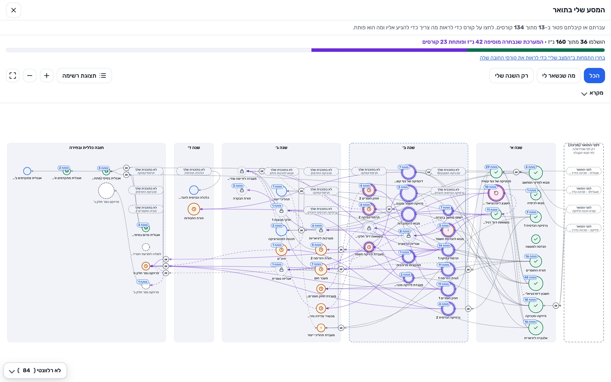
איור 16. "המסע שלי בתואר": קורסים שהושלמו (✓ ירוק), קורס שנכשלו בו (אדום), קורסים במערכת שנבחרה (סגול), וקורסים נעולים (מנעול). כל קורס מראה כמה קורסים הוא פותח.
פס עליון: כמה נ״ז הושלמו מתוך כל התואר, וכמה המערכת שנבחרה מוסיפה.
סינון: הכל, מה שנשאר לי, או רק השנה שלי. יש גם תצוגת רשימה, זום ומסך מלא.
לחיצה על קורס מראה מה צריך כדי להגיע אליו ומה הוא פותח.
פרק 12
12שימוש בטלפון
רוב הסטודנטים בונים מערכת מהטלפון. הכלי מותאם למסך קטן, בלי אפליקציה ובלי התקנה.
הלוח מוצג יום אחד בכל פעם, עם בורר ימים למעלה. יום פנוי מסומן "פנוי".
הכפתורים הראשיים (חברים, העדפות, רשימה להרשמה, שתף) עוברים לפס תחתון.
אותם נתונים ואותן יכולות כמו במחשב.
"שתף (וואטסאפ ועוד)" פותח את תפריט השיתוף של הטלפון.
נגישות
האתר נבנה עם ניווט מקלדת, תוויות לקוראי מסך וניגודיות צבעים, ויש בו הצהרת נגישות. פניות בנושא נגישות אפשר לשלוח דרך דף הדיווח באתר.
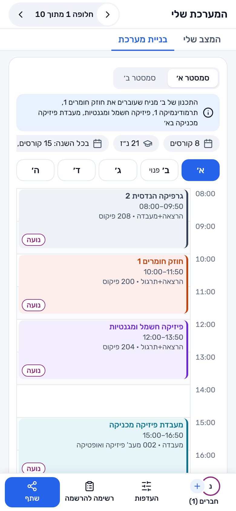
איור 17. הכלי בטלפון: יום א׳, עם בורר ימים ופס כפתורים תחתון.
פרק 13
13מקור הנתונים ועדכונם
הנתונים נלקחים מהידיעון הציבורי של המכללה (yedionpub.afeka.ac.il), בלי התחברות ובלי גישה למידע אישי.
עדכון אוטומטי: סריקה לילית מעדכנת את הקבוצות, המקומות הפנויים והבחינות. כל קורס מתעדכן לפחות פעם ביומיים, והבחינות בכל לילה. בראש המסך מופיע מתי הנתונים נבדקו לאחרונה ("נבדק לפני…").
סריקה מנומסת: בקשה אחת בכל פעם, עם השהיה של כ-2.5 שניות בין בקשות, מתחת למגבלה של הידיעון. הסורק מזדהה בשם הכלי ובכתובת הקוד, מכבד בקשות האטה, ועוצר אחרי שלוש דחיות ברצף.
בדיקות לפני פרסום: נתונים נכתבים רק אם כל הבדיקות האוטומטיות עוברות (מספר מינימלי של קורסים, קורס עוגן בכל מחזור ובכל סמסטר). נתונים שלא השתנו לא נכתבים מחדש.
בדיקה מול המקור הרשמי: התקנון וסך הנ״ז נבדקו מול תוכניות הלימודים הרשמיות של תשפ״ז, ותקנון הלימודים בעדכון 5.2.2026.
מגבלה ידועה
הנתונים טובים כמו הידיעון הציבורי ועשויים לפגר ביום או יומיים אחריו. ייצוא רשמי מהמכללה (קובץ או API) יפתור את זה, ראו פרק 16.
פרק 14
14פרטיות ואבטחה
הכלי נבנה כך שאין לו שום מידע על הסטודנטים, ולכן גם אין מה לדלוף.
עיקרון
בפועל
הכול בדפדפן
הכלי רץ כולו בדפדפן של הסטודנט. אין שרת, אין הרשמה, אין חשבון ואין מאגר נתונים.
המידע לא יוצא מהמחשב
הציונים, הכישלונות והקבצים שהסטודנט מעלה (גליון ציונים, מערכת של חבר) נקראים במחשב שלו ולא נשלחים לשום מקום.
בלי מעקב
אין עוגיות, אין כלי אנליטיקה ואין פרסומות. הפונט מתארח באתר עצמו.
מדיניות אבטחה (CSP)
הדפדפן מורשה לטעון קוד רק מהאתר עצמו. החריג היחיד הוא ספריית זיהוי טקסט בתמונה, שנטענת רק כשמעלים תמונה של מערכת חבר, ורק מנתיב קבוע.
קישורים נבדקים
קישורי חבר וגיבוי נחשבים קלט לא מהימן: בדיקת מבנה, מגבלות גודל ובנייה מחדש שדה אחרי שדה לפני שימוש.
קוד פתוח
כל הקוד פתוח לבדיקה ב-GitHub, ברישיון MIT. נבדק שאין בקוד ובהיסטוריה שלו מפתחות או סודות.
בדיקות אוטומטיות
חבילת בדיקות שרצה לפני כל פרסום של האתר: פרסור הנתונים, התקנון, החיפוש, השיתוף ומדיניות האבטחה.
תנאי השימוש, מדיניות הפרטיות והצהרת הנגישות המלאים נמצאים באתר, בקישורים שבתחתית כל עמוד.
פרק 15
15סעיפי התקנון שהכלי מיישם
לפי תקנון הלימודים בעדכון 5.2.2026. כל חסימה ואזהרה בכלי מציינת את הסעיף שלה.
סעיף
נושא
מה הכלי עושה
6.2.3
קורס מקביל
מאפשר לקחת קורס יחד עם הקורס המקביל שלו באותו סמסטר, ומסמן "זמין בתנאי".
7.3
חפיפה בין שיעורים
אף מערכת לא כוללת שני שיעורים באותה שעה.
7.4
דרישות קדם
חוסם קורס כשדרישת קדם חסרה, לאורך כל השרשרת, ומסביר מה חסר.
11.4.1
לימודים על תנאי
מזהיר ממעמד "על תנאי" כשמצטברים 3 כישלונות.
11.4.4
התקדמות מינימלית
מד התקדמות מול יעד של 70% מהנ״ז הנדרשים.
11.5.1
הרחקה: כישלונות מצטברים
מזהיר מהרחקה כשמצטברים 4 כישלונות ומעלה.
11.5.2
הרחקה: כישלון חוזר באותו קורס
מזהיר מהרחקה אחרי 3 כישלונות באותו קורס.
11.6.1
חזרה על קורס
קורס שנכשלו בו מוצע שוב כחזרה, בסמסטר שבו הוא נפתח.
אם משהו לא מדויק
אשמח לקבל מהמכללה הערות על פרשנות התקנון או על כללי ההתמחות, ולעדכן את הכלי בהתאם.
פרק 16
16ההצעה למכללה ופרטי קשר
קישור מאתר המכללה או מאפקה-נט לכלי, כעזר לסטודנטים בתקופת ההרשמה.
ייצוא רשמי של נתוני הקורסים והקבוצות (קובץ או API). כך הנתונים יהיו מדויקים ומעודכנים, ולא יהיה צורך לסרוק את הידיעון.
פגישת הצגה. אשמח להציג את הכלי, לקבל הערות ולהתאים אותו לצרכים של המכללה.
מה המכללה מרוויחה
פחות פניות למזכירות ולרכזים בשאלות של "מה אני יכול לקחת".
סטודנטים שמגיעים להרשמה עם מערכת חוקית ורשימת קבוצות גיבוי.
בלי עלות, בלי שרת ובלי אחריות על מידע אישי של סטודנטים.